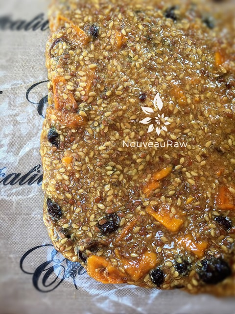
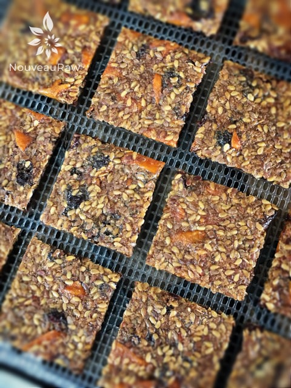
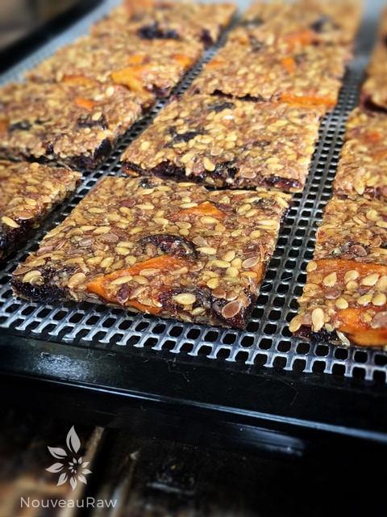
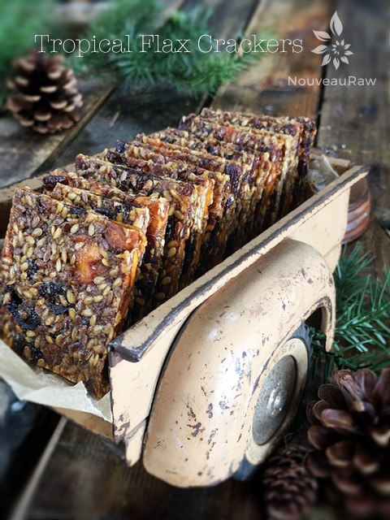

Tropical Flax Crackers

~ raw, vegan, gluten-free, nut-free ~
The other night as I was tossing and turning in bed I got to thinking about flax crackers. Why at that particular time and hour, who knows. I am sure many great creations were thought of in the twilight hours of the day.
So back to the flax. The golden rule in dealing with flax-seeds is to first soak them in water. This creates a gel around the seeds making them more digestible and also acts as a thickening agent when making raw breads, crackers, cereals, and many other recipe items.
Once this gel is created you can’t rinse it away. It is there to stay! Personally, I love to wash my hands and then run my fingers through the flax mixture. I just love the feeling as it slips and slides around my fingers. This is also a great way to break up any clumps that may have formed.
As I mentioned all the recipes we read when dealing with whole flax seeds say to soak in water…I got to thinking, “Why does it have to be water? Why can’t I use a fruit or vegetable juice?” Well, you can.
When I make flax crackers I use all sorts of veggies. I take making crackers as the prime opportunity to clean my fridge out and use up leftover veggies. So why couldn’t I juice some of these veggies, soak the seeds in the veggie juice, and heck, I can even throw the veggie pulp into the cracker batter and nothing is wasted! Well, you can. :)
Last week my husband and I processed 18 young Thai coconuts. I froze a large portion of the coconut water but left a jar in my fridge to play with. So last night I soaked 1 cup of flax seeds in coconut water. This morning I created the cracker batter. With a coconut base, all I could think of was the tropics so I ran with it. I added a minimum amount of ingredients though. I didn’t want to mask the coconut too much because I wanted to see if it would come through in flavor. In the future, I might get more creative and add other items such as coconut flakes, chocolate chips, etc. But for now, I want to see if the coconut water is enough to give flavor to the base of the recipe.
End result: My husband and I both love the flavor of this cracker. What I learned was the way that the coconut water affected this complete recipe… the cracker never dehydrated to a “dry, crispy” cracker. It is firm and chewy but delicious. Nothing wrong with it, huh?! The taste of coconut water didn’t come through strong in flavor, which is what I was aiming to test for. But I know that the extra nutrients of that coconut water is there. Overall, I would continue to make this cracker but now I would add shredded or flaked coconut and whatever ingredients stuck my fancy at the time. The cracker leans more on the sweet side, but not so sweet that it overpowers your sweet tooth.
yields 16 (2×2″) crackers
- 3 cups coconut water or any juice
- 1 cup flax seeds
- 1 cup dried cranberries
- 1 cup dried pineapple or mango
- 1/2 cup ground flax seeds
- 1/4 cup maple syrup
- 1 Tbsp ground Ceylon cinnamon
- 1/4 tsp Himalayan pink salt
Preparation:
- In a medium-sized bowl combine the: juice, flax seeds, dried fruit, ground flax, sweetener, cinnamon, and salt. Stir well, cover, and set aside for everything to soak.
- It is ready to move forward when all the liquid has been absorbed.
- Spread the batter onto the teflex sheets that come with the dehydrator to about 1/4″ thickness.
- Dehydrate at 145 degrees for 1 hour, then reduce to 115 degrees for approx. 16 hrs. It won’t dry to a crispy cracker, more on the chewy side.
- After about 8 hours or when firm enough, lay the mesh sheet on top of the batter, place a dehydrator tray frame over that and flip the entire thing over. Now remove the other frame and gently peel off the teflex sheet.
- This is a good time to score your crackers into the shape that you desire. Or cut them with a kitchen scissor when they are done as I did.
- Store in an airtight container on the counter for 1-2 weeks.
The Institute of Culinary Ingredients™
- To learn more about maple syrup by clicking (here).
- Why do I specify Ceylon cinnamon? Click (here) to learn why.
- What is Himalayan pink salt and does it really matter? Click (here) to read more about it.
- Learn how to grind your own flax-seeds for ultimate freshness and nutrition. Click (here).
Culinary Explanations:
- Why do I start the dehydrator at 145 degrees (F)? Click (here) to learn the reason behind this.
- When working with fresh ingredients it is important to taste test as you build a recipe. Learn why (here).
- Don’t own a dehydrator? Learn how to use your oven (here). I do however truly believe that it is a worthwhile investment. Click (here) to learn what I use.

Ok, I know, not so attractive of a photo but this is what the batter looks like wet and after I spread it out on the dehydrator tray.

Just giving you view of what they look like after dehydrating. They are chewy and somewhat bendable. And so bright with flavor!

Everyone requests this view… they like to see how thick or thin crackers are. Eat your heart out… literally. hehe

© AmieSue.com